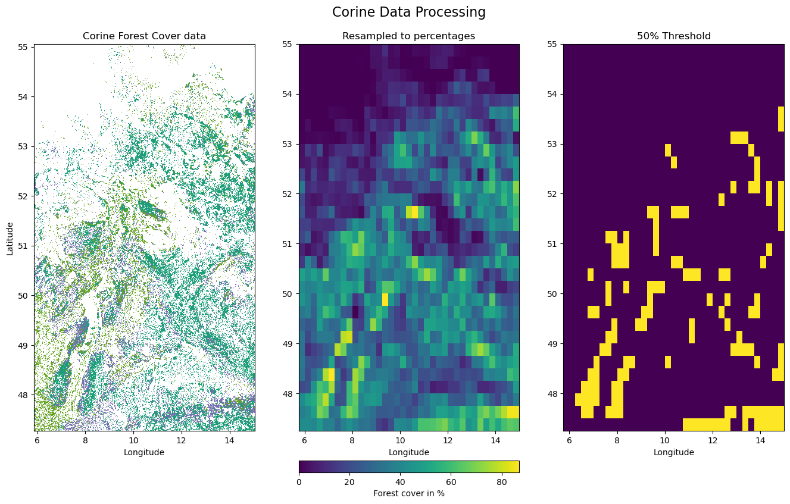
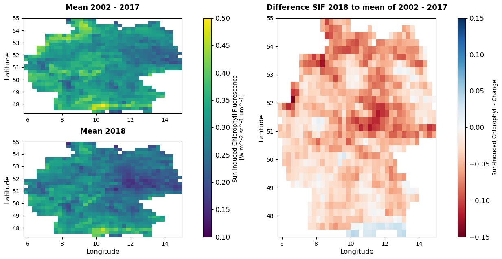
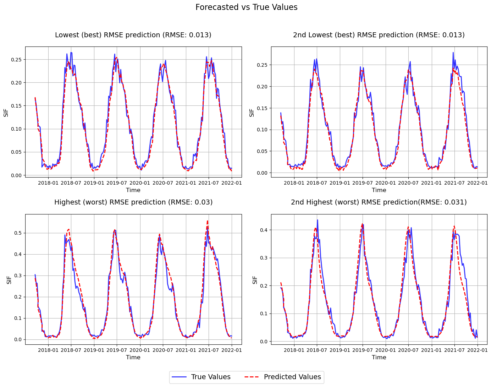

In this we will go through the basic structure of the analysis, as well as the results. The code in this Notebook is only used to compile the results and evaluate them. The code used to generate the results is found in the executable scripts and function scripts following this notebook.
If you want to reproduce the results go to the according Gitlab repository.
1.1 Setup
Throughout the scripts some functions and variables are used multiple times. These functions and variables were defined in config.py and utils.py.
From the config script we use the variables, the latitude and longitude range as well as a time range to subset our datacube, containg climatic data and SIF data.
import sysimport osimport geopandas as gpdimport xarray as xrimport rioxarray as rioimport jsonimport numpy as npfrom matplotlib.colors import ListedColormap, Normalizeimport matplotlib.pyplot as pltfrom mpl_toolkits.axes_grid1.inset_locator import inset_axesfrom matplotlib.gridspec import GridSpec# Add the parent directory to sys.pathsys.path.append(os.path.abspath(os.path.join('scripts')))# from scripts.config import *from scripts.utils import create_cube_subset, create_pathsfrom scripts.s03_base_analysis import base_analysis, change_plot, plot_timeseriesfrom scripts.config import variablesfrom scripts.modelling_functions import plot_forecasts_from_dict;import matplotlib.pyplot as plt
2024-07-29 08:22:57.086573: I external/local_tsl/tsl/cuda/cudart_stub.cc:32] Could not find cuda drivers on your machine, GPU will not be used.
2024-07-29 08:22:57.088989: I external/local_tsl/tsl/cuda/cudart_stub.cc:32] Could not find cuda drivers on your machine, GPU will not be used.
2024-07-29 08:22:57.125407: I tensorflow/core/platform/cpu_feature_guard.cc:210] This TensorFlow binary is optimized to use available CPU instructions in performance-critical operations.
To enable the following instructions: AVX2 FMA, in other operations, rebuild TensorFlow with the appropriate compiler flags.
2024-07-29 08:22:58.200263: W tensorflow/compiler/tf2tensorrt/utils/py_utils.cc:38] TF-TRT Warning: Could not find TensorRT
Here you can see the subsetted cube
Code
# Create a data directorydata_path ="data"os.makedirs(data_path, exist_ok=True)# Create paths to the datagermany_shp_path, corine_file_path, cube_sample_path, cube_crop_path, cube_crop_mask_path = create_paths(data_path=data_path)# Create a subset of the Earth System Data Cube, containing only relevant variables and the desired spatial and temporal extentcube_subset = create_cube_subset()# remove attributescube_subset.attrs = {}print(cube_subset)
# Load cube subset croped and cube subset maskcube_subset_crop = xr.open_dataset(cube_crop_path)cube_subset_mask = xr.open_dataset(cube_crop_mask_path)# Load the forest percentages rasterforest_percentages = rio.open_rasterio(cube_crop_path.replace(".nc", "_percentages.tif"))# Create a grid spec with extra space at the bottomfig = plt.figure(figsize=(14, 8))gs = GridSpec(2, 3, height_ratios=[1, 0.03], hspace=0.15)# Create subplots in the grid specax0 = fig.add_subplot(gs[0, 0])ax1 = fig.add_subplot(gs[0, 1])ax2 = fig.add_subplot(gs[0, 2])# Plot rasterio datasetcorine_raster.plot(ax=ax0, alpha=1, vmin=vmin, vmax=vmax, cmap=cmap, add_colorbar=False)ax0.set_title("Corine Forest Cover data")ax0.set_ylabel("Latitude")ax0.set_xlabel("Longitude")# Plot the forest percentages rasterforest_im = forest_percentages.plot(ax=ax1, alpha=1, add_colorbar=False)ax1.set_title("Resampled to percentages")ax1.set_ylabel("")ax1.set_xlabel("Longitude")# Add a colorbar at the bottom for the forest percentages rastercax = fig.add_subplot(gs[1, 1]) # Add a subplot in the second row, middle columncbar = fig.colorbar(forest_im, cax=cax, orientation='horizontal')cbar.set_label("Forest cover in %")# Plot the forest cover 50% thresholdcube_subset_crop.forest_cover_50.plot(ax=ax2, vmin=0, add_colorbar=False)ax2.set_title("50% Threshold")ax2.set_ylabel("")ax2.set_xlabel("Longitude")# Main title for the entire figurefig.suptitle("Corine Data Processing", fontsize=16)# Adjust the layout to ensure everything fits wellplt.subplots_adjust(left=0.05, right=0.95, top=0.90, bottom=0)plt.show()

Showing examplary timestep of croped and masked + croped cube
Code
# Create subplotsfig, axes = plt.subplots(1, 2, figsize=(10, 5))# Plot the croped datasetim = cube_subset_crop.sif_gosif.isel(time=20).plot(ax=axes[0],vmin=0.2,vmax=0.6, add_colorbar=False, cmap='viridis')axes[0].set_title("Cube Subset Cropped")axes[0].set_xlabel("Longitude")axes[0].set_ylabel("Latitude")# Plot the masked datasetcube_subset_mask.sif_gosif.isel(time=20).plot(ax=axes[1],vmin=0.2,vmax=0.6, add_colorbar=True, cmap='viridis')axes[1].set_title("Cube Subset Masked")axes[1].set_xlabel("Longitude")axes[1].set_ylabel("")# Add germany bordergermany_gpd.plot(ax=axes[0], edgecolor='black', alpha=1, linewidth=1.5, facecolor ="none")germany_gpd.plot(ax=axes[1], edgecolor='black', alpha=1, linewidth=1.5, facecolor ="none" )# Adjust layoutplt.tight_layout(rect=[0, 0, 0.9, 1]) # Adjust rect to make room for the colorbarplt.show()
1.4 Basic Analysis of SIF-Data
The next step in our analysis was to
Perform a change detection by calculating the summer mean for each year and the change for the year 2018 to the baseline up to 2017
Plot summer means for the SIF variable for the reference period 2000-2017, 2018 and the difference of them.
We can see that the SIF values are lower in 2018 compared to the reference period, all over germany, except in some small areas, mostly in the Alps. This overlaps with our expectation, although this methodology does not relate the change to the Heatwave, but only shows that 2018 was a year with comparably low SIF over germany.
Code
# Calculate the temporal changes in the variables using from s03_base_analysis.pysummer_sif_mean_cube, summer_mean_to_2017, changes = base_analysis(cube_subset_crop, years=[2018, 2019])# Select only year 2018 from mean over summer monthssummer_mean_2018 = summer_sif_mean_cube.sel(year=2018)# Plot the changes using the function defined in s03_base_analysis.pychange_plot(ref_period = summer_mean_to_2017, data_2018 = summer_mean_2018, changes = changes);

Plot Sif Time series (mean over masked cells in germany)
In the timeseries we can see also see that the year 2018 had comparably low SIF values in the summer months compared to the preceeding years.
To determine what is the appropriate model structure, we tested for different approaches.
Four general model setups were tested. These are differing in whether they are global or local models and whether they have an auto regressive component or not, meaning whether they encoperate a shifted version of the target variable (SIF) as a predictor.
To find the best hyperparameters 3 look back periods were tested and a grid search cross-validation was done.
We can see that the local models clearly performed better. For that reason global models were not further considered.
Code
import osimport jsonfrom collections import defaultdict# Function to read JSON files and extract relevant datadef read_json_files(base_dir):# Initialize a dictionary to store the extracted data results = {"results_l15": {"auto": [], "noauto": []},"results_l30": {"auto": [], "noauto": [], "global_auto": [], "global_noauto": []},"results_l45": {"auto": [], "noauto": []}, }# Traverse through the base directory and subdirectoriesfor lookback_dir in ["results_l15", "results_l30", "results_l45"]: lookback_path = os.path.join(base_dir, lookback_dir)ifnot os.path.isdir(lookback_path):continue# Identify files containing "auto", "noauto", or "global" in their namesfor filename in os.listdir(lookback_path):if"global"in filename:continueif"noauto"in filename: key ="noauto"elif"auto"in filename: key ="auto"else:continue file_path = os.path.join(lookback_path, filename)# Read and parse the JSON filewithopen(file_path, 'r') asfile: data = json.load(file)# Extract relevant data and store it in the results dictionaryfor location, details in data.items(): result_entry = {"location": location,"best_params": details.get("best_params", {}),"look_back": details.get("look_back", 0),"evaluation": details.get("evaluation", {}), } results[lookback_dir][key].append(result_entry)return results# Function to calculate mean performance metricsdef calculate_mean_performance(results):# Initialize dictionaries to store the sum and count of performance metrics performance_sums = defaultdict(lambda: {"mae": 0, "rmse": 0, "count": 0}) mean_performance = {}# Sum the performance metrics and count the number of entriesfor lookback in results:for auto_type in results[lookback]:for entry in results[lookback][auto_type]: evaluation = entry["evaluation"]if"mae"in evaluation and"rmse"in evaluation: performance_sums[f"{lookback}_{auto_type}"]["mae"] += evaluation["mae"] performance_sums[f"{lookback}_{auto_type}"]["rmse"] += evaluation["rmse"] performance_sums[f"{lookback}_{auto_type}"]["count"] +=1# Calculate the mean performance metricsfor key, sums in performance_sums.items():if sums["count"] >0: mean_performance[key] = {"mean_mae": np.round(sums["mae"] / sums["count"], 4),"mean_rmse": np.round(sums["rmse"] / sums["count"], 4) }else: mean_performance[key] = {"mean_mae": None, "mean_rmse": None}return mean_performance# Base directory where the results folders are locatedbase_dir = os.path.join("results", "modelling")# Read JSON files and extract dataresults_data = read_json_files(base_dir)# Calculate mean performance metricsmean_performance_data = calculate_mean_performance(results_data)globa_auto_path = os.path.join(base_dir, "results_l30", "results_global_auto_l30.json")global_noauto_path = os.path.join(base_dir, "results_l30", "results_global_noauto_l30.json")def get_mae_rmse_from_json(json_path):withopen(json_path, 'r') asfile: data = json.load(file)return np.round(data["evaluation"]["mae"],3), np.round(data["evaluation"]["rmse"],3)global_results = get_mae_rmse_from_json(globa_auto_path), get_mae_rmse_from_json(global_noauto_path)import pandas as pd# Convert the dictionary to a DataFramedata = []for key, values in mean_performance_data.items(): lookback, auto_type = key.rsplit('_', 1) data.append({'model' : 'local','lookback': lookback[-2:],'type': auto_type,'mean_mae': values['mean_mae'],'mean_rmse': values['mean_rmse'] })# Add global results to the datadata.append({'model' : 'global','lookback': '30','type': 'auto','mean_mae': global_results[0][0],'mean_rmse': global_results[0][1]})data.append({'model' : 'global','lookback': '30','type': 'noauto','mean_mae': global_results[1][0],'mean_rmse': global_results[1][1]})# Create a DataFramedf = pd.DataFrame(data)# Display the DataFrameprint(df)
model lookback type mean_mae mean_rmse
0 local 15 auto 0.0150 0.0217
1 local 15 noauto 0.0161 0.0228
2 local 30 auto 0.0144 0.0212
3 local 30 noauto 0.0142 0.0210
4 local 45 auto 0.0149 0.0218
5 local 45 noauto 0.0145 0.0211
6 global 30 auto 0.0330 0.0450
7 global 30 noauto 0.0330 0.0500
Comparison between local models.
The plot below shows the mean performances of all local models. The local model without autoregressive component and a lookback period of 30 was selected as the best model setup.
Code
import matplotlib.pyplot as pltimport numpy as npfrom matplotlib import cmdef plot_performance_data(mean_performance_data):# Define colors and markers colors = {'auto': "blue",'noauto': "orange" } shades = {'results_l15': 0.4,'results_l30': 0.7,'results_l45': 1 } markers = ['o', 's', 'D', '^']# Create a new figure plt.figure(figsize=(10, 6))# Plot data for each key in the mean performance datafor idx, (key, performance) inenumerate(mean_performance_data.items()): lookback, auto_type = key.rsplit('_', 1) color = colors[auto_type] shade = shades[lookback] plt.scatter(performance['mean_mae'], performance['mean_rmse'], color=color, alpha=shade, label=key, s=100)# Add labels and title plt.xlabel('Mean MAE') plt.ylabel('Mean RMSE') plt.title('Mean Model Performance Comparison local Models', fontsize=16) plt.legend(loc='upper left', bbox_to_anchor=(1, 1)) plt.grid(True) plt.tight_layout()# Show plot plt.show()# Call the function to plot the dataplot_performance_data(mean_performance_data)
1.6 Final Modelling
Based on the prelimary results a local model with a lookback of 30 time steps (30 * 8 days = 240 days) was chosen.
The modelling setup was the same as before, except that now the model was fitted for all locations and the number of hyperparameters was reduced. In the prelimnary results the hyperparameters of using 3 lstm layers, and relu as an activation function never were selected as the best hyperparameters. Therefore they were no longer considered.
The RMSE and MAE show the model achieved a good fit with a mean RMSE of 0.02 and a mean MAE of 0.014.
Code
# Reading the results and evaluation from the filewithopen("results/modelling/final/results_full_local_auto_l30.json", 'r') asfile: results_dict = json.load(file)rmse_values = {loc: data['evaluation']['rmse'] for loc, data in results_dict.items()}mae_values = {loc: data['evaluation']['mae'] for loc, data in results_dict.items()}mean_rmse = np.mean(list(rmse_values.values()))mean_mae = np.mean(list(mae_values.values()))print(f"Mean RMSE: {mean_rmse:.3f}")print(f"Mean MAE: {mean_mae:.3f}")
Mean RMSE: 0.020
Mean MAE: 0.014
Plotting timerseries for the best and worst performing models
In the plot below showing the two best and worst performing models, we can also that the forecasted values match well with the true values. Even so for the two worst performing models. We can however observe that steep increases or decreases in SIF were in many cases not well predicted.
Code
import pickle# Function to load a generic objectdef load_object(filename):withopen(filename, 'rb') asfile:return pickle.load(file)test_index = load_object("results/modelling/final/test_index.pkl")# Call the function with the example dictionaryplot_forecasts_from_dict(results_dict, test_index)

2 Conclusion
We showed that the SIF values in 2018 were lower than in the reference period 2000-2017. We also showed that a local model with a lookback of 30 time steps was the best model setup. Our results support that LSTM models are a good choice for predicting SIF values and that doing so using only climatic drivers is possible. Even for timesteps further in the future the model still produced good results. However it was observable that strong spikes and drops in SIF values were not well predicted. This area needs further research. Nonetheless these results are promising and the approach could be used to predict SIF values into the actual future, using climate forecasts. This could allow us to better quantify possible impacts of climate change on forests and how their contribution to the carbon cycle could change, based on different scenarios.